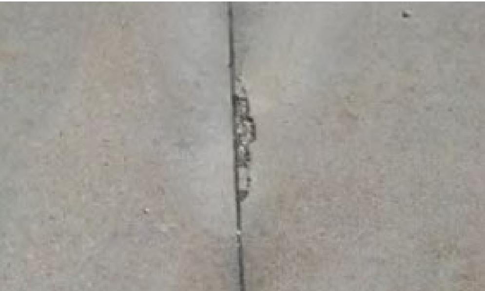
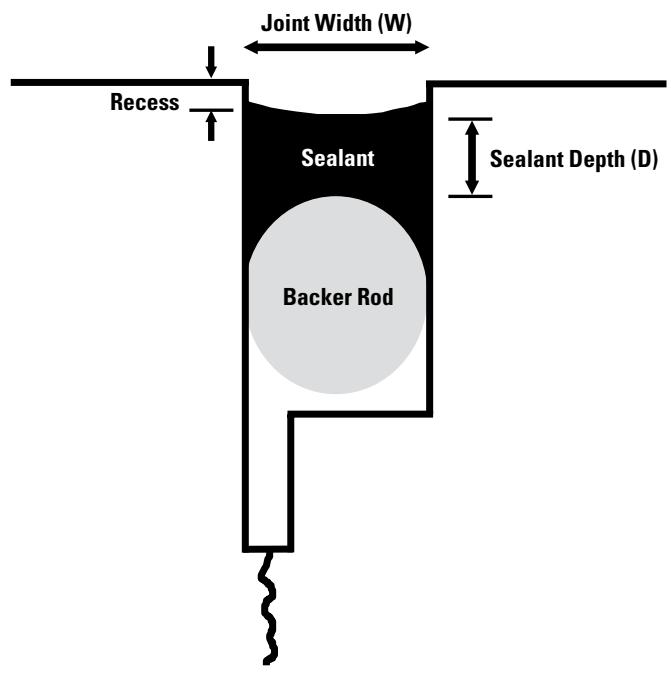
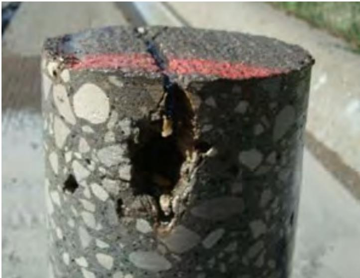

Silicone Sealant Application Guidelines
The Silicone Sealant Application Guidelines are a set of technical specifications that prescribe how to prevent uncontrolled ingress of water and other incompressible materials into concrete pavement joints, which can account for up to 80 % of surface‑water entry [2][9][10][15]. They require the joint reservoir to be cleaned, sandblasted, oil‑free air‑dried, and, when necessary, primed, then filled with a one‑part, cold‑applied silicone sealant that exhibits high extensibility, low modulus and strong weathering resistance, placed in a recessed configuration thinner than half the joint width but not less than 0.25 in, supported by an oversized flexible backer rod [13][14][2]. The guidelines also define geometric criteria such as a shape factor of approximately 0.5 (or up to 2 for low‑modulus products), a minimum seal thickness of 6 mm, and a recess of 3–6 mm below the pavement surface, and they mandate ambient temperatures of at least 40 °F during placement [10][15]. Compliance is verified through inspection of substrate condition, bead dimensions, adhesion and elasticity tests, and periodic performance monitoring roughly every two years to ensure long‑term durability [2][9][10][14][15].
Sources (15)
Purpose and applicability
The silicone sealant application guidelines address the chronic problem of uncontrolled ingress of water and other incompressible materials into concrete pavement joints, which is identified as a primary pathway for surface‑water entry—up to 80 % in longitudinal joints. By mandating that “Joints are filled with sealant to prevent ingress of deleterious materials” and emphasizing that “The purpose of joint and crack sealing is to keep the incompressibles and moisture out of the joints,” the guidelines aim to stop the deterioration mechanisms (subgrade softening, erosion, spalling) caused by such infiltration. Consequently, they are “intended to eliminate the premature joint failure and water‑intrusion problems that arise when a sealant is not installed correctly.” [2][9][10][15]
The following figure illustrates the incompressible damage that occurs when these guidelines are not followed.

Incompressible damage to concrete joint National Concrete Pavement Technology Center [9]The image displays a vertical transverse joint in a concrete pavement where the sealant has failed, leaving the gap open. Debris and incompressible material are lodged within the joint opening, creating excessive stresses that may cause spalling at the face of the slab.
[2] — Ch. 8 (pp. 257–259), Ch. 10 (p. 315); [9] — Ch. 4 (p. 233); [10] — Ch. 9 (pp. 241–257); [15] — Ch. 10 (pp. 197–210)
The guides agree that silicone‑sealant application guidelines are appropriate only under a set of preparation, material, and performance conditions. When the joint reservoir has been prepared according to ACPA‑specified cleaning (wet wash, sandblasting of the top inch, oil‑free air blow) and its width‑to‑depth ratio is about one‑half, silicone or two‑component cold‑poured sealants are appropriate; a primer must be applied if the concrete contains dolomitic limestone to overcome their known poor adhesion. In addition, “Silicone‑sealant application guidelines should be followed whenever the joint can be kept clean and dry, the pavement lacks adhesion‑impairing aggregates, ambient temperature is at least 40 °F, and the joint geometry permits a seal thinner than half its width (minimum 0.25 in).” The guides also note that silicone is the preferred choice for joints expected to undergo large movements—generally strains of fifty percent or more—provided the reservoir depth meets the manufacturer’s minimum, and that “Silicone‑sealant guidelines are appropriate when the joint is expected to undergo large movements—typically strains of 50 % or more—and can be provided with a recessed configuration that meets the manufacturers’ depth requirement.” The seal should be placed thinner than half the width of the joint, with a minimum thickness of 0.25 in; “It is recommended that they be placed thinner than half the width of the joint, with a minimum thickness of 0.25 in.” Moreover, silicone must be recessed and never overbanded: “Silicone sealants should never be overbanded or placed flush with the pavement surface.
Conversely, when any of these prerequisites are not met, another method is recommended. If the joint spacing or aggregate type will cause greater expansion such that the shape factor cannot be kept near 0.5, or if the reservoir shape factor is required to be 1, a hot‑poured asphalt‑based sealant or a compression sealant should be selected instead. Likewise, “Conversely, if any of these conditions are absent—such as low temperatures, unsuitable aggregate, limited joint movement (≈ 25 % or less), or when cost considerations favor a thicker, hot‑applied asphalt sealant—a different sealing method, typically a hot‑applied sealant, should be selected.” When the joint was never filled, is heavily damaged, or the concrete contains dolomitic limestone without using a primer, “an alternative repair material or method should be selected instead.” Finally, for modest anticipated deformation (approximately 25‑35 % strain), for flush or over‑banded joints, or when a suitable silicone product is unavailable, “hot‑poured thermoplastic sealants should be used instead.” [2][10][14][15]
The following figure illustrates various joint sealant configurations relevant to these selection criteria.
 Joint sealant configurations. [15]
Joint sealant configurations. [15]
The figure displays three distinct cross-sectional profiles for concrete pavement joints: Recessed, Flush-Filled, and Overbanded. In the recessed configuration, a backer rod supports the sealant bead which is positioned below the surface level.
[2] — Ch. 8 (pp. 257–259); [10] — Ch. 9 (pp. 241–249); [14] — 2 Types and Mechanisms of Join… (p. 24); [15] — Ch. 10 (pp. 199–205)
Required inputs
one‑part, cold‑applied silicone that provides high extensibility, low modulus and strong weathering resistance. supplied in non‑sag or self‑leveling classes. meeting ASTM D5893. The sealant must exhibit high extensibility, good bonding strength and strong weather resistance, its low‑modulus nature permits placement at a shape factor of two, with a thickness less than half the joint width but not thinner than 0.25 in. A compatible backer rod is placed first; it must be flexible, compressible, non‑absorbent and typically manufactured from polyethylene, polyurethane, polychloroprene or polystyrene, with a diameter 25–50 % larger than the joint width to achieve the proper shape factor. it must be about 25 % larger in diameter than the joint width, non‑absorptive and approved by the sealant manufacturer. Silicone sealant joints must be prepared with a clean, textured reservoir. Prior to placement the joint is water‑washed after sawing, sandblasted to remove residue and provide surface texture. air‑blown using oil‑free compressed air that meets at least 120 ft³/min flow and 90 lb/in² nozzle pressure. Solvent cleaners are prohibited because they can leave contaminants that inhibit bonding. The cleaning stage must avoid chemical solvents because residues can inhibit bonding, when the concrete contains dolomitic limestone, a compatible primer must be applied to the joint faces to achieve adhesion. its performance is compromised when the concrete contains dolomitic limestone unless a primer is applied to the reservoir walls. The joint geometry should follow a shape factor (width‑to‑depth ratio) of 0.5 as specified for silicone and cold‑poured sealants, a shape factor of about 2 is acceptable for low‑modulus silicone. Installation demands clean, dry joints opened to roughly the middle of the allowable width. The joint cavity must be clean, dry and free of condensation before sealing, ambient conditions that are moderate—preferably in spring or fall—and never below 40 °F, Ambient temperatures for placement shall not fall below 4 °C (40 °F), Allowable ambient temperatures during sealing operations. The sealant thickness shall be no less than half the joint width, with a minimum of 6 mm, the backer rod temperature should be at least 14 °C higher than the sealant application temperature to prevent damage. [2][10][13][14][15]
The following figure illustrates a typical joint configuration with a two-inch deep seal.
 Schematic of a joint sealant application showing the backer rod and adhesive forces. [10]
Schematic of a joint sealant application showing the backer rod and adhesive forces. [10]
The figure displays a cross-section of a concrete pavement joint containing a flexible, compressible backer rod that is compressed to fit within the cavity. Red arrows indicate adhesive forces acting between the sealant material and the vertical walls of the reservoir. The backer rod must be flexible, compressible, nonabsorbent, and compatible with the selected sealant material to ensure proper joint geometry.
[2] — Ch. 8 (pp. 257–259); [10] — Ch. 9 (pp. 239–255); [13] — App. D (p. 127); [14] — 2 Types and Mechanisms of Join… (p. 24); [15] — Ch. 10 (pp. 197–210)
The design of silicone‑sealant joints is governed by a set of dimensional and performance criteria that are consistently required across the referenced guides. A fundamental parameter is the shape factor, which “is defined as the ratio of the sealant width (W) to the sealant depth (D).” Most specifications call for a reservoir shape factor of 0.5 – “Silicone and two‑component, cold‑poured sealants typically need a reservoir shape factor of 0.5.” Low‑modulus products may permit higher values, with some guides allowing shape factors up to 2.
Joint geometry must provide sufficient opening for material flow: “joint opening should be at least 0.19 in wide to allow sufficient penetration of the hot‑applied sealant into the joint reservoir.” When refacing, widening is limited – “refacing may widen the joint but must not exceed 0.08 in total,” while another source notes a typical increase of 3 mm (0.125 in) overall.
Saw cuts are prescribed to achieve the required depth: “Initial cut to a depth of T/4 or T/3 as required for conventional sawing.” The resulting reservoir dimensions are often standardized, e.g., “common reservoir dimensions range from 19 mm by 19 mm (0.75 in by 0.75 in) to 25 mm by 25 mm (1 in by 1 in).”
Backer‑rod sizing follows the rule that its diameter be roughly a quarter larger than the joint width: “the backer rod diameter should be about 25 percent larger than the joint width.” The rod must fit snugly with no side gaps.
Sealant thickness and recess are limited by joint width. The installed sealant must be at least half the joint width, with an absolute minimum of 0.25 in (6 mm): “installed sealant thickness must be ≥0.25 in (not less than half the joint width)” and “minimum thickness of 6 mm (0.25 in).” Placement is always recessed: “Silicone sealants are always placed in the recessed configuration, with a typical recess of about 0.25 to 0.38 in.”
Compression performance is controlled during temperature cycles: “compression sealants are selected such that the maximum compression of the seal is 50 percent and the minimum is 20 percent through the anticipated ambient temperature cycles in the area.”
Surface preparation and cleaning are critical. Recommended procedures include water washing, sand‑blasting the top inch of each face, and high‑pressure oil‑free air blowing: “The compressor should deliver air at a minimum 120 ft³/min and develop at least 90 lb/in² nozzle pressure.” Visual inspection for dust, moisture, oil or saw residue must be performed before backer‑rod placement.
Pre‑construction checks encompass equipment verification (saw availability, backer‑rod insertion tool depth adjustment, functioning sealant insertion devices) and environmental limits: “Silicone sealants should not be placed at temperatures below 40 °F.” Contractors are required to submit a saw‑cutting quality‑control plan and material certifications prior to work.
After placement, acceptance testing confirms dimensional compliance and material performance. The joint is filled from the bottom up to achieve a void‑free surface: “Joint is filled from the bottom up to the specified level to produce a uniform surface with no voids in the sealant.” Post‑cure verification includes adhesion and elasticity checks such as the knife test, hand‑pull test, or sample‑stretch test: “Adequate adhesion and elastic properties are verified by field testing random segments of cured sealant. Examples of tests include the knife test, hand‑pull test, and sample‑stretch test (ACPA 2018).” [2][10][13][15]
[2] — Ch. 8 (pp. 257–259); [10] — Ch. 9 (pp. 242–255); [13] — App. D (p. 127); [15] — Ch. 10 (pp. 197–210)
Equipment and personnel
The equipment identified for silicone‑sealant work spans several stages. For preparation the guides list brushes or sprayers to apply primer, a water truck to provide moisture control and cleaning, and saw‑cutting equipment to create and size the sealant reservoir. Placement is supported by a properly adjusted backer‑rod insertion tool, preformed sealant insertion devices that seat the strip without overstretching, and a sealant pump to deliver material into the joint. Consolidation of the sealant may be achieved with the same sealant pump used for placement. Finishing the cured joint calls for tooling or leveling devices to meet dimensional tolerances. No dedicated hardware is prescribed for curing; temperature limits and cure time are managed by procedural controls. Acceptance testing after cure relies on inspection procedures rather than specific test equipment. [10][13]
The following figure illustrates the proper technique for backer rod insertion using a handheld roller.
 Backer rod insertion with a handheld roller [10]
Backer rod insertion with a handheld roller [10]
The image shows a worker using a long, vertical tool to insert a black flexible backer rod into a saw-cut joint in concrete pavement.
[10] — Ch. 9 (p. 253); [13] — App. D (p. 127)
The guides specify that silicone‑sealant work be performed by a crew consisting of qualified operators and a project inspector. Operators must understand the joint configuration and the specific silicone material, possess the appropriate equipment, and ensure all safety mechanisms and guards on the equipment are functional while wearing required personal protective equipment. The inspector is responsible for overseeing placement, confirming that the backer rod is installed uniformly without side gaps or damage, and verifying that the cured sealant achieves adequate adhesion and elasticity through field tests such as knife‑pull checks. [10][15]
[10] — Ch. 9 (p. 255); [15] — Ch. 10 (pp. 208–210)
Work sequence
Before any silicone sealant can be applied, the project team must verify that all safety equipment and personal protective gear are in place and functional, conduct a condition assessment of existing joints, select an appropriate sealant material, and confirm that ambient temperatures meet the minimum requirement. The joint reservoir must be cut to the specified depth and shape according to the design tolerances, and any previously placed sealant must be fully removed and the joint refaced to create a clean reservoir. Thorough cleaning follows: a water wash removes wet‑saw slurry, abrasive or sandblasting eliminates residue, and a final high‑pressure air blast ensures the faces are dry and free of contaminants. Once cleanliness is confirmed, a compatible backer rod—properly sized and installed without stretching—is placed to achieve the required sealant dimensions. All necessary tools (e.g., saw‑cutting QC plans, sandblasting equipment, backer‑rod insertion devices) must be inspected and ready before sealant placement begins. [2][9][10][13][15]
The following figure illustrates how these dimensional requirements influence the internal forces within the cured material.

Schematic of joint sealant reservoir showing dimensions and components. [10]The figure displays a cross-section of a concrete pavement joint containing a recessed silicone sealant bead supported by an oversized flexible backer rod. It illustrates the geometric criteria required for proper application, specifically labeling the joint width (W), sealant depth (D), and recess below the pavement surface.
[2] — Ch. 8 (pp. 257–259); [9] — Ch. 4 (p. 233); [10] — Ch. 9 (pp. 239–257); [13] — App. D (p. 127); [15] — Ch. 10 (pp. 198–209)
- Verify ambient temperature is at least 40 °F (4 °C).
- Remove existing sealant without damaging the joint, using a rectangular joint plow, high‑pressure water blasting, or a diamond‑bladed saw.
- Reface and cut the joint to the required width/depth (approximately one‑quarter to one‑third slab thickness) with a small‑diameter diamond‑bladed saw, creating a sealant reservoir.
- Immediately after cutting, flush the joint with water in a single direction to remove slurry.
- Allow the faces to dry, then sandblast the top inch of each face at an angle to avoid blasting into the joint and to eliminate laitance.
- Blow‑dry the joint with oil‑free compressed air; the compressor must deliver at least 120 ft³/min at 90 lb/in² nozzle pressure.
- If dolomitic limestone is present in the concrete, apply a primer to the reservoir walls before sealant placement.
- Install the backer rod (if specified) using material that matches the specification, inserting it uniformly—longitudinal rods first, transverse rods last—and secure it especially for self‑leveling products so material does not flow around it.
- Place silicone sealant: a. For self‑leveling sealants, place in one step; the material flows to fill the joint reservoir without tooling. b. For non‑sag (nonself‑leveling) sealants, apply from the bottom upward, maintaining a bead thickness thinner than half the joint width but not less than 0.25 in (6 mm).
- Tool non‑sag sealant within about ten minutes of placement, using a rubber hose on a fiberglass rod or large‑diameter backer rod to press the sealant against sidewalls and create a concave surface whose lowest point is roughly 0.25 in below the pavement.
- Allow cure to tack‑free according to ASTM D5893; traffic‑ready times are typically 25–90 minutes for non‑sag types and about three hours for self‑leveling types, or keep traffic off for approximately one hour as specified.
- Verify adhesion with field tests such as a knife pull, hand‑pull, or sample‑stretch on several random cured sections. [2][10][14][15]
[2] — Ch. 8 (pp. 257–259); [10] — Ch. 9 (pp. 241–257); [14] — 2 Types and Mechanisms of Join… (p. 24); [15] — Ch. 10 (pp. 201–210)
The guides require that each critical step follow a defined time window. Immediately after joint refacing, the joint should be cleaned with high‑pressure air or water followed by sandblasting. The joints must then be blown again with high pressure (> 621 kPa) clean, dry air immediately prior to backer‑rod and sealant installation to remove remaining particles. The backer rod is to be installed as soon as possible after the joints are air‑blasted, and the sealant material should be installed as soon as possible after backer‑rod placement. After sealant placement, tooling must occur within about 10 minutes of sealant installation before the skin forms. The sealant may be opened to traffic only after it has cured to a tack‑free condition; non‑sag silicones reach this state in 25 to 90 minutes, self‑leveling silicones require about 3 hours, and manufacturers typically specify roughly one hour before traffic can resume. [10][15]
The following figure illustrates an expansion joint detail with a backer rod installed to ensure proper joint shape factor.
 Expansion joint detail with a backer rod installed to ensure proper joint shape factor. [10]
Expansion joint detail with a backer rod installed to ensure proper joint shape factor. [10]
The figure displays a cross-section of an expansion joint where the preformed isolation filler has been removed to create a reservoir for sealant application. A backer rod is inserted into the bottom portion of this gap, and a formed-in-place sealant bead sits above it in a recessed configuration. This assembly illustrates the installation process where joints are cleaned and backer rods are inserted to ensure proper joint shape factor before new sealant is installed.
[10] — Ch. 9 (pp. 248–255); [15] — Ch. 10 (pp. 202–210)
Staging and logistics
The merged guidance indicates that silicone sealant installation is constrained by a combination of spatial, access, weather and environmental factors.
Space constraints – Joint openings must be large enough to receive the sealant: “a joint opening should be at least 0.19 in. wide to allow sufficient penetration of the hot‑applied sealant into the joint reservoir” and the reservoir itself is typically sized between “19 mm by 19 mm (0.75 in by 0.75 in) to 25 mm by 25 mm (1 in by 1 in).” The reservoir shape factor should meet design requirements: “Silicone and two‑component, cold‑poured sealants typically need a reservoir shape factor of 0.5.” Backer rods are required to be oversized: “about 25 percent larger in diameter than the joint width” and must be installed promptly after blasting: “The backer rod should be installed as soon as possible after the joints are airblasted.” Closed‑cell, cross‑linked or bicellular products are preferred because they resist moisture absorption: “The use of closed‑cell, cross‑linked, and bicellular backer rod products are recommended because they are more resistant to moisture absorption than open‑cell materials.” The joint profile should be recessed: “The joint must be provided with a recessed profile of at least six‑to‑nine mm below the pavement surface” and sealant should not be overbanded or placed flush: “silicone sealants should never be overbanded or placed flush with the pavement surface.”
Site‑access constraints – Cutting and preparation equipment must reach the joint location, often at a lane‑shoulder interface: “The reservoir can be created using either a router or a diamond‑bladed saw.” Adequate air supply is essential; compressors must meet minimum performance: “The compressor should deliver air at a minimum 120 ft3/ min and develop at least 90 lb/in2 nozzle pressure.” Air used for cleaning must be oil‑free and equipped with water/oil traps: “For cleaning joints, the air stream must be free of oil” and “Air compressors used with the sandblasters must be equipped with working water and oil traps to prevent contamination of the joint bonding faces.”
Cleaning procedures require dry, uncontaminated conditions: “Joint sand blasting, reservoir cleanliness, and moisture condition requirements before sealing” and debris must be removed without re‑contamination: “Joints and surrounding surfaces should be airblown in one direction away from prevailing winds, taking care not to contaminate previously cleaned joints.” When concrete contains dolomitic limestone, adhesion is reduced and a primer is required: “Silicone sealants are known to have poor adhesion to concrete containing dolomitic limestone” and “A primer application to the reservoir walls will help ensure that the silicone adheres.” Solvent residues can also be detrimental: “Chemical solvents used for cleaning the joint reservoir may be detrimental.”
Weather constraints – Temperature limits are strict: “Silicone sealants should not be placed at temperatures below 4 °C (40 °F).” The preferred installation window is during moderate conditions: “The optimum time of the year to perform joint resealing is generally during the spring or fall when moderate installation temperatures are prevalent… however, it is also important that the prevailing conditions are dry and that the threat of condensation is low.” Rain or wet surfaces halt work: “Rain conditions and skip sawing procedures” and extreme heat or prolonged moisture must be avoided because they affect cure rates.
Environmental constraints – The durability of the sealant depends on material selection, joint design and installation quality: “The performance of the joint and crack sealing treatments (i.e., how long they effectively perform their primary functions) varies considerably with the type of material, the reservoir design, prevailing climatic conditions, and the quality of the installation process.” Moisture in the backer rod or on the joint face must be prevented: “condensation on the backer rod” and “clean and dry helps to ensure good long-term performance.”
Post‑placement access – Traffic should be kept off the repaired area until the sealant gains sufficient strength: “Traffic should not be allowed on the pavement for about 1 hour after sealant placement.” [2][9][10][13][14][15]
[2] — Ch. 8 (pp. 257–259); [9] — Ch. 4 (p. 233); [10] — Ch. 9 (pp. 239–249); [13] — App. D (p. 127); [14] — 2 Types and Mechanisms of Join… (p. 24); [15] — Ch. 10 (pp. 197–205)
Quality control and acceptance
The inspector must verify that the concrete substrate does not contain dolomitic limestone, or if present, confirm that a suitable primer has been applied to the reservoir walls (“Silicone sealants are known to have poor adhesion to concrete containing dolomitic limestone.”; “A primer application to the sealant reservoir walls will ensure that the silicone adheres.”). Joint faces and reservoirs must be free of oil, solvent residues, debris and moisture (“The performance of silicone sealants is typically tied to joint cleanliness, the presence of moisture, and tooling effectiveness.”; “Chemical solvents used to clean the joint reservoir may be detrimental.”; “For cleaning joints, the air stream must be free of oil.”; “verify that the reservoirs are clean and dry”; “debris collecting in the reservoir”). The joint reservoir should be sand‑blasted to achieve the required cleanliness and dry condition (“Joint sand blasting, reservoir cleanliness, and moisture condition requirements before sealing”). The air‑cleaning system employed before placement must deliver oil‑free air at a flow of at least 120 ft³/min and a nozzle pressure near 90 lb/in² (“The compressor should deliver air at a minimum 120 ft3/ min and develop at least 90 lb/in2 nozzle pressure.”).
Backer‑rod material must be certified, flexible, compressible, non‑absorbent, chemically compatible with the sealant, and sized about 25 % larger than the joint opening (“The backer rod must be flexible, compressible, nonabsorbent, and compatible with the selected sealant material.”; “The backer rod should be approved by the sealant manufacturer, and be about 25 percent larger in diameter than the joint width.”; “Joint sealant and backer rod material certification submittals”).
Geometric characteristics of the installed bead are inspected against defined tolerances: the shape factor (width‑to‑depth ratio) must be approximately 0.5 or otherwise within a range that minimizes internal stresses (“Silicone and two-component, cold-poured sealants typically need a reservoir shape factor of 0.5.”; “The shape factor is defined as the ratio of the sealant width (W) to the sealant depth (D)”; “A proper shape factor minimizes the stresses that develop within the sealant and at the sealant/pavement interface as the joint opens.”). The sealant depth must meet surface‑depth tolerances and be at least 0.25 in, but not exceed half the joint width (“It is recommended that they be placed thinner than half the width of the joint, with a minimum thickness of 0.25 in.”; “Joint sealant surface depth tolerances”). The bead should be recessed 3–6 mm (≈0.125‑0.250 in) below the pavement surface (“It is also generally recommended that the sealant be recessed between 3 and 6 mm (0.125 and 0.25 in) below the surface of the pavement.”).
Mechanical performance criteria include a compression capability of 20–50 % over anticipated temperature cycles (“Compression sealants are selected such that the maximum compression of the seal is 50 percent and the minimum is 20 percent through the anticipated ambient temperature cycles”) and a strain capacity of 50‑100 % (“silicone sealants are designed to tolerate strains from 50% to 100%”; “silicone sealants are designed to tolerate strains from 50 to 100 percent”). Placement temperature must be above 40 °F (“Silicone sealants should not be placed at temperatures below 40°F.”).
Intrinsic material properties that must be confirmed are durability, extensibility, resilience and adhesiveness (“Durability.”; “Extensibility.”; “Resilience.”; “Adhesiveness.”). Adhesion and elastic behavior are verified by field tests such as knife or hand‑pull checks on random cured sections (“Verify adequate adhesion at several random sections of cured sealant. As with the hot‑applied sealants, a simple knife test can be used to test for adhesion.”).
Ongoing performance is inspected roughly every two years, with failure defined as loss of function in more than 25 % of the sealed area (“approximately every 2 years”; “failure definition of 25% of the sealant installation being no longer functional”). Inspectors look for water intrusion, degradation of the filler, and any loss of seal integrity. [2][9][10][13][14][15]
The following figure illustrates common signs of failure, such as the joint deterioration evident below the joint sealant.

Deteriorated concrete pavement joint with failed sealant and exposed aggregate. [14]The image displays a cylindrical core of concrete pavement containing a vertical crack that has been filled with a dark, degraded material.
[2] — Ch. 8 (pp. 257–259); [9] — Ch. 4 (p. 233); [10] — Ch. 9 (pp. 241–255); [13] — App. D (p. 127); [14] — 2 Types and Mechanisms of Join… (p. 24); [15] — Ch. 10 (pp. 197–210)
Measurements of sealed joints are performed on a periodic schedule, generally about every two years, to determine if the silicone sealant still functions or needs resealing or refilling. This routine check follows the guideline that all sealed concrete joints should be inspected at roughly two‑year intervals to ensure they continue keeping incompressibles and moisture out of the joint. [9]
[9] — Ch. 4 (p. 233)
Safety and environmental controls
Across the guides, several worker and public hazards are identified for silicone sealant installation. Workers can be exposed to hazardous chemicals when cleaning joints; ‘Chemical solvents used to clean the joint reservoir may be detrimental.’ Sand‑blasting creates airborne dust that requires respiratory protection: ‘During the sandblasting operation, a proper helmet and breathing apparatus and any other appropriate safety equipment should be used to protect the operator.’ The equipment supplying the abrasive stream must have water and oil traps to avoid contaminating the joint faces: ‘Air compressors used with the sandblasters must be equipped with working water and oil traps to prevent contamination of the joint bonding faces.’ High‑pressure air streams must be directed away from traffic, and debris should not be blown into adjacent lanes: ‘Joints and surrounding surfaces should be airblown in one direction away from prevailing winds, taking care not to contaminate previously cleaned joints. Care must also be taken not to blow debris into traffic in adjacent lanes.’ Mechanical injury can arise from cutting tools; thin blades may overheat and warp: ‘Blade overheating and warping can result from using thin blades.’ The backer‑rod insertion tool must be free of sharp edges: ‘Backer rod insertion tool is adjusted for the correct installation depth and does not have sharp or jagged edges that could cut or abrade backer material.’ Temperature control is critical because low temperatures impede curing: ‘Silicone sealants should not be placed at temperatures below 4 °C (40 °F).’
Public safety concerns include the risk of pavement failure if incompressible objects become trapped in joints, which can cause blow‑ups: ‘Sealing prevents incompressible objects from entering joint reservoirs. Incompressibles contribute to spalling and, in extreme cases, may induce blow-ups.’ Additionally, premature traffic exposure creates slip or stability hazards; traffic should be kept off the treated surface for at least an hour after placement: ‘Traffic should not be allowed on the pavement for about 1 hour after sealant placement.’ [2][10][15]
[2] — Ch. 8 (pp. 257–259); [10] — Ch. 9 (p. 253); [15] — Ch. 10 (pp. 201–209)
Curing, protection, and handoff
The work may be opened to construction traffic only after the silicone sealant has reached a tack‑free condition. Across the guides, traffic should not be allowed on the pavement for about 1 hour after placement; non‑sag silicones can become tack‑free and may be opened to traffic in 25 to 90 minutes, while self‑leveling silicones typically require about 3 hours. Actual opening times vary with ambient temperature, humidity and the sealant manufacturer’s recommendations. Before any traffic is permitted, an inspector confirms the tack‑free cure state and may perform random adhesion checks before releasing the work. [10][15]
[10] — Ch. 9 (pp. 248–255); [15] — Ch. 10 (pp. 203–210)
Expected performance and maintenance
The guides identify several recurring distress mechanisms that compromise silicone‑sealant joints. Poor joint preparation is repeatedly cited: inadequate cleaning of the joint faces inhibits proper adhesion of the sealant, and residues from chemical solvents or oil‑laden air streams further prevent a durable bond. Concrete that contains dolomitic limestone also reduces adhesion unless the reservoir walls are primed before placement. Once placed, the sealant can be damaged by geometric and material errors—excessive depth relative to width (“necking‑down”) creates high internal stresses that may exceed the 50 %–100 % strain capacity, leading to adhesive separation or cohesive rupture of the sealant. Minimum thickness requirements and proper backer‑rod installation are essential; open‑cell rods that retain moisture or loosely positioned rods allow water to become trapped, promoting saturation, spalling, and blow‑ups from incompressible debris. Environmental factors such as placement below 40 °F, delayed tooling beyond the skinning window, or non‑uniform filling that entrains air also accelerate loss of performance. Over‑banded seals on high‑traffic pavements are especially vulnerable to wear, blistering, hardening and cracking. The guides define failure when roughly one‑quarter of the installed sealant no longer functions, typically after two to eight years, with water infiltration through joints accounting for up to 80 % of surface‑water entry and causing subgrade erosion, settlement or faulting. Routine inspections at about two‑year intervals are recommended to detect these distresses before extensive moisture damage occurs. [2][9][10][14][15]
The following figure illustrates the severe concrete pavement distresses, such as spalling and blowups, that can result from these sealant failures.
 Examples of concrete pavement joint distresses resulting from sealant failure. [10]
Examples of concrete pavement joint distresses resulting from sealant failure. [10]
The figure displays two distinct modes of deterioration in concrete pavement joints: the left panel shows a longitudinal joint with missing and debonded sealant, while the right panel depicts a joint filled with incompressible materials.
[2] — Ch. 8 (pp. 257–259); [9] — Ch. 4 (p. 233); [10] — Ch. 9 (pp. 241–253); [14] — 2 Types and Mechanisms of Join… (p. 24); [15] — Ch. 10 (pp. 197–209)
The guides advise that sealed concrete joints should be inspected on a regular schedule, roughly every two years, to verify that the silicone sealant remains functional and to decide whether resealing or refilling is required. Preventive maintenance for silicone‑sealant joints includes routine visual inspections and cleaning, periodic resealing when sealants approach their ten‑year service life, and ensuring all installation tools are kept in proper condition. Monitoring of sealant performance is achieved through periodic visual checks, water‑infiltration monitoring of longitudinal lane‑shoulder joints (which can verify up to 85 % reduction in water entry), and field testing of random cured sections using knife, hand‑pull or sample‑stretch tests to confirm adequate adhesion and elasticity. When deterioration is found, the old material should be removed with non‑damaging techniques; using a rectangular joint plow or removal with a diamond‑bladed saw is recommended because it cuts hardened silicone without melting. [9][10][14][15]
The following figure illustrates the consequences of inadequate maintenance, showing how poor joint sealant can lead to saturation and subsequent micro-cracking or freeze damage.
 Longitudinal freeze damage in a concrete pavement core caused by water saturation from poor joint sealant. [9]
Longitudinal freeze damage in a concrete pavement core caused by water saturation from poor joint sealant. [9]
The image displays a cylindrical concrete core sample featuring a large longitudinal void and cracking along the vertical axis, indicating severe internal structural failure. This damage is caused by increasing the saturation of concrete, which decreases its ability to resist freezing when water in the system expands upon freezing.
[9] — Ch. 4 (p. 233); [10] — Ch. 9 (pp. 239–255); [14] — 2 Types and Mechanisms of Join… (p. 24); [15] — Ch. 10 (pp. 197–209)
References
- Integrated Materials and Construction Practices for Concrete Pavement: A STATE-OF-THE-PRACTICE MANUAL ·
2019-12_IMCP_manual - Guide for Concrete Pavement Distress Assessments and Solutions:Identification, Causes, Prevention, and Repair ·
concrete_pvmt_distress_assessments_and_solutions_guide_w_cvr - Concrete Pavement Preservation Guide (Third Edition) ·
concrete_pvmt_preservation_guide_3rd_edition_web - Field Reference Manual for Quality Concrete Pavements ·
hif13059 - Guide for Optimum JOINT PERFORMANCE of Concrete Pavements ·
optimum_joint_performance_guide_web - Concrete Pavement Preservation Workshop ·
preservation_reference_manual
References
- Guide to the Prevention and Restoration of Early Joint Deterioration in Concrete Pavements (2016) [link]
- Integrated Materials and Construction Practices for Concrete Pavement: A State-of-the-Practice Manual (2nd edition IMCP Manual, 2019) [link]
- Best Practices Manual: Quality Control and Quality Acceptance of Concrete Airport Pavement [link]
- Guide for Partial-Depth Repair of Concrete Pavements (2012) [link]
- Quality Control for Concrete Paving: A Tool for Agency and Industry (Optimized for fast web viewing–2021) [link]
- Sustainable Concrete Pavements: A Manual of Practice (2012) [link]
- Performance Assessment of Nonwoven Geotextile Materials Used as the Separation Layer for Unbonded Concrete Overlays of Existing Concrete Pavements in the US (Guide–2018) [link]
- Concrete Overlay Repair and Replacement Strategies (Guide–Optimized for fast web viewing–2024) [link]
- Guide for Concrete Pavement Distress Assessments and Solutions: Identification, Causes, Prevention, and Repair (Distress Manual–2018) [link]
- Concrete Pavement Preservation Guide (3rd Edition–Optimized for fast web viewing–2022) [link]
- Guide to Concrete Trails (2019) [link]
- Guide to Concrete Overlays (4th Edition–Optimized for fast web viewing–2021) [link]
- Field Reference Manual for Quality Concrete Pavements (2012) [link]
- Guide for Optimum Joint Performance of Concrete Pavements (Optimized for fast web viewing–2012) [link]
- Concrete Pavement Preservation Workshop Reference Manual (2008) [link]